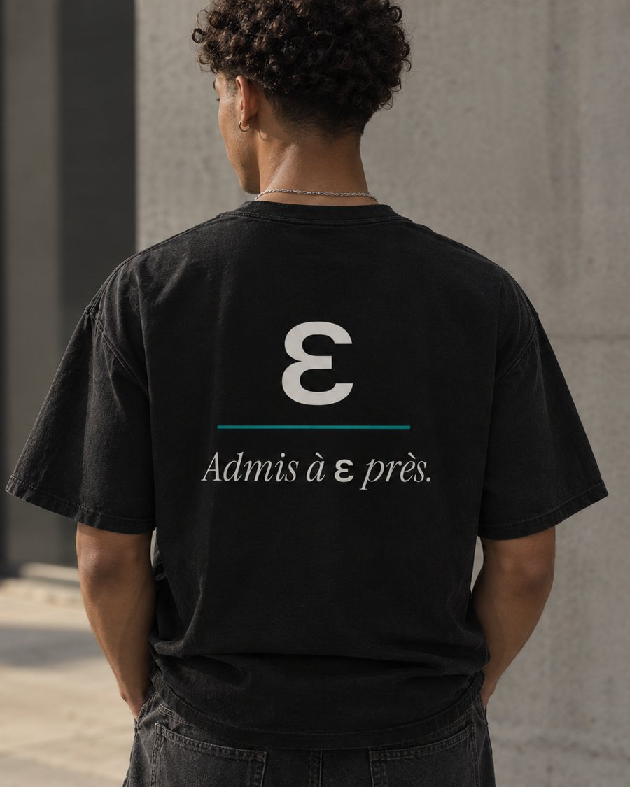
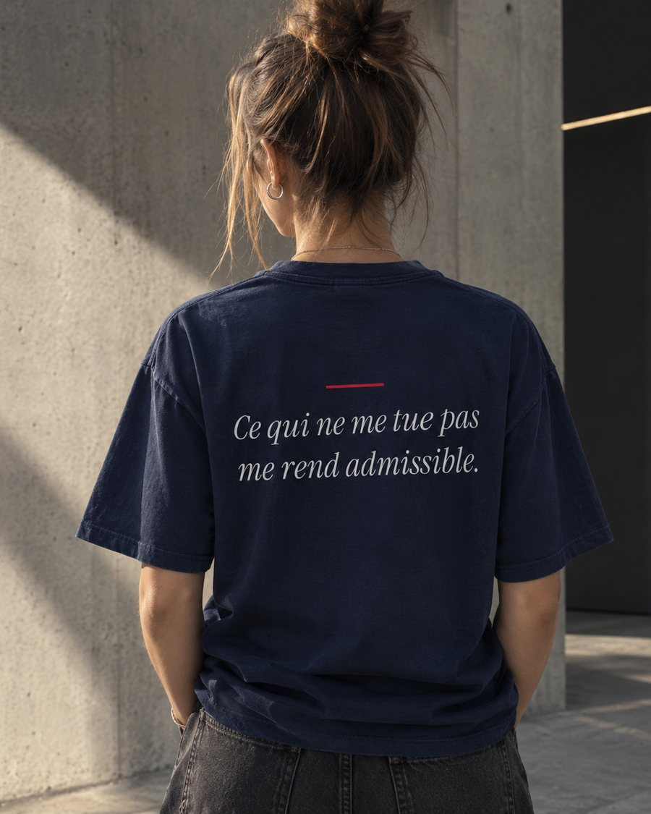
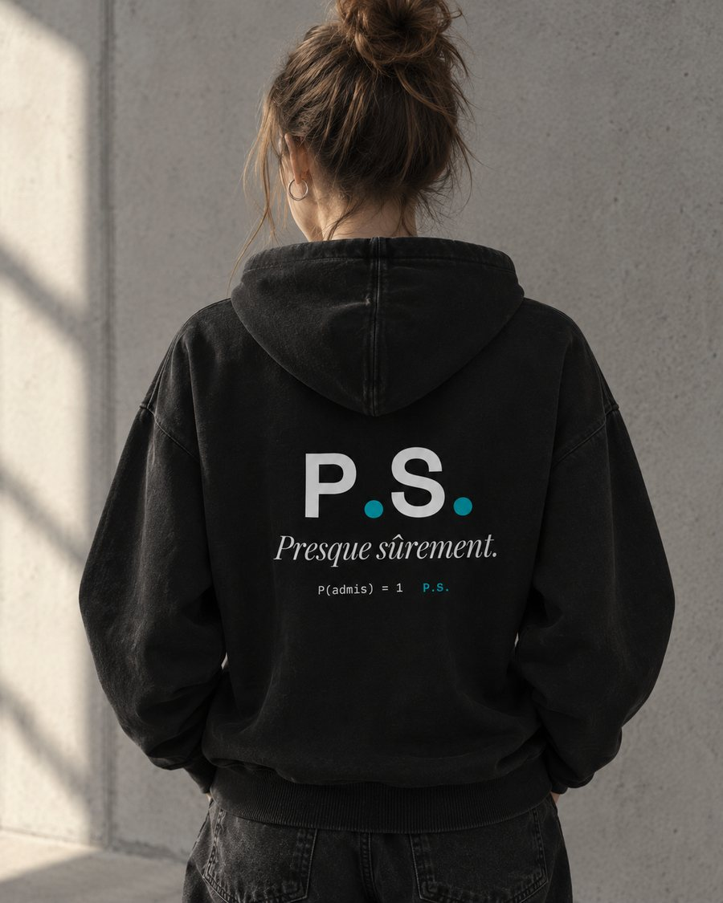
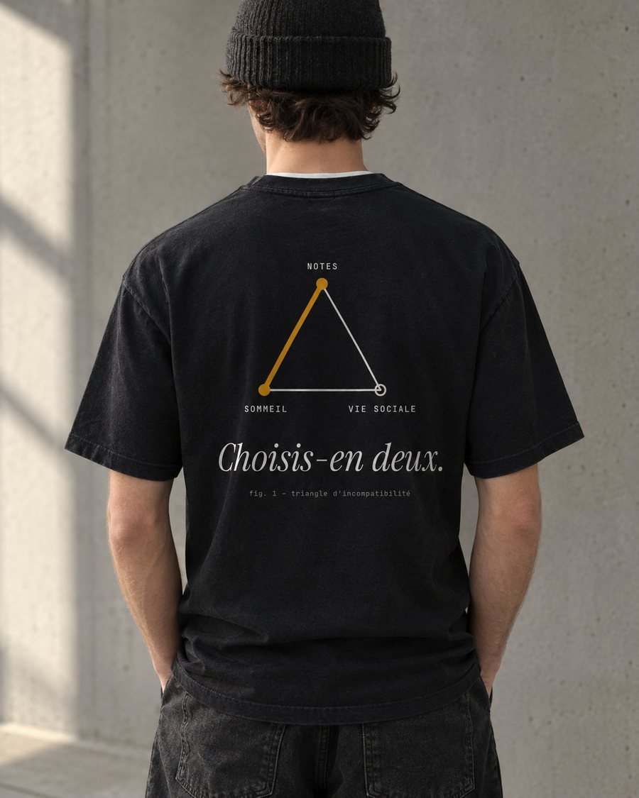
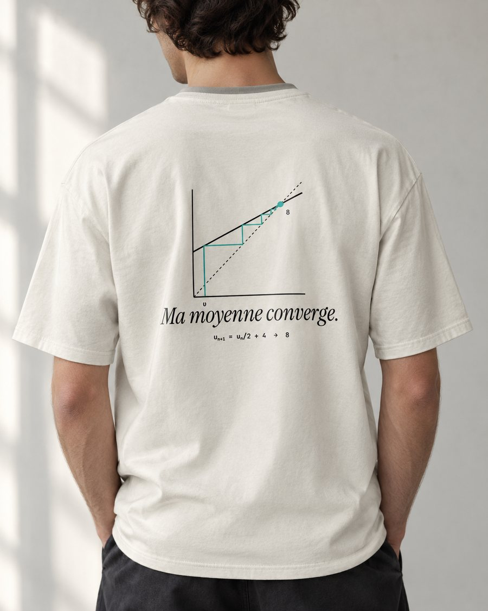
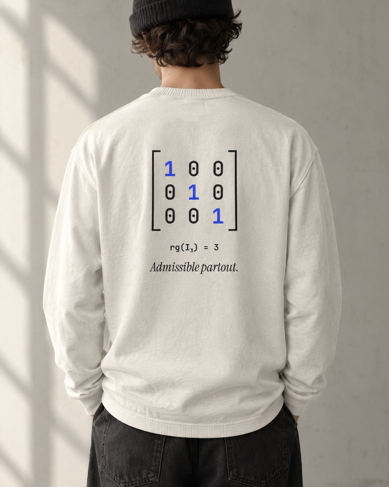

Hors Programme · Drop 00
Hors
Programme.
Des vêtements de prépa.
Pas au programme, mais dans la garde-robe.
Des références que ceux qui savent reconnaîtront. Des pièces pensées pour être portées partout.
Drop 00 — Les premiers modèles
Six idées. Une question : lesquelles méritent d'exister ?

Ce qui ne me tue pas
me rend admissible.
Voter pour ce modèle →
Presque sûrement.
Voter pour ce modèle →
Choisis-en deux.
Voter pour ce modèle →
Ma moyenne converge.
Voter pour ce modèle →
Admissible partout.
Voter pour ce modèle →Lequel doit exister ? Deux minutes, anonyme.
Donner mon avis →Visuels illustratifs, générés par IA. Aucun produit n’est encore en vente.
Manifeste
Il y a le cours, les khôlles, les concours blancs. Et il y a tout ce qui n'est pas au programme : le café de 23 h, l'arbitrage entre notes, sommeil et vie sociale, le « presque sûrement » qu'on se répète avant l'oral.
Hors Programme habille ces moments. Des pièces simples, qu'on porte au quotidien, avec un détail que reconnaîtront ceux qui sont passés par là.
Donner son avis
Deux minutes pour décider de ce qui existera.
Les modèles, les slogans, les prix qui te paraissent justes. Réponses anonymes.
Le questionnaire est hébergé par Google Forms ; il ne se charge que lorsque tu cliques.
FAQ
Quand sort le Drop 00 ?
Les modèles retenus seront annoncés sur Instagram, @horsprogrammes.
Quel prix ?
Les prix sont annoncés à l'ouverture des précommandes.
Livraison
Les délais et modalités sont communiqués avant toute commande.
Tailles
Un guide des tailles sera publié à l'ouverture.
Données personnelles
Le site n'utilise pas de cookies de suivi. Voir la politique de confidentialité.